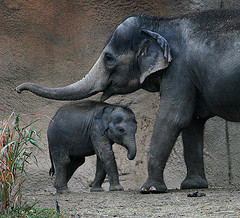
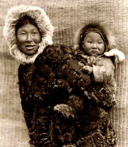
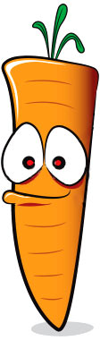

Todos debemos comer cierto? Pero que es lo mejor que debemos comer? Chocolates, helado, pizza, pasta, y dulces… ummmm que delicia. Pero un momento! Tantos dulces no son buenos para tus dientes, sobre todo los hechos con azucar blanca. Dulces con azucar integral (morena) o azucar de frutas o miel son los mas saludables. Pero recuerda que todo es exceso es dañino incluso los dulces de azucar integral. Por eso no comas muchos dulces pero saborealos bien! ;-)
Y que acerca de los vegetales frutas cereales y carne? Dependiendo del pais en donde vives, la comida y dieta varia. Hay diferentes tradiciones y platos tipicos de cada nacion. Debido a las tradiciones indigenas en Centro y Sur America el maiz es muy famoso, y hay una gran variedad de preparaciones a base de mais. En Asia, el arroz es muy famoso, como en India o en China, en donde hay miles de formas como preparar el arroz. Pero lo cierto es que nunca en la historia el hombre comia tan insaludable como hoy en dia. Sabes por que? Por que la comida no es natural y ademas es preparada por maquinas. Con el fin de que los alimentos y bebidas no se malogren, las Industrias recargan sus productos con colores, sabores, y conservantes artificiales, los que afectan tu salud. Asi lo mejor es la comida que la naturaleza nos da, libre de quimicos, y sustancias artificiales. Asi seras mas fuerte, saludable y tendras mucha mas energia para jugar, correr y saltar. |
|
|
Pero y que pasa con la carne? Bueno la pregunta talvez seria: ¿por que ser vegetariano? ¿Que necesidad hay? Y la respuesta es muy simple. como un principio de respeto se dice: “Come lo nesesario, haciendo el menor daño posible.” Lo dicen los Ecologistas asi como los que adoran a Dios en todas las culturas. Si tenemos suficientes granos, cereales, frutas, y vegetales para que comernos una vaquita, un caballito, o un hermoso pescado de colores? Cuando estan vivos son mas lindos que cuando no lo estan, cierto? En Africa se comen la carne de los elefantes. Imaginate! Pobresitos... Acaso no son ellos mas hermosos cuando estan vivos? Acaso no son los cisnes o conejos mas hermosos vivos? Si podemos sobrevivir perfectamente sin matar a nuestros amigos los animalitos, para que entonces comer carne? Los esquimos por ejemplo, eran tribus indigenas que pescaban, y esa era toda su comida. Sabes en donde vivian? Cerca al polo norte, en Canada y Alaska, en donde casi no crece ningun vegetal, no tenian otra opcion sino comer pescado. Su tradicion y principio moral era que diariamente al atardecer despues de pescar como muestra de respeto por los pescaditos oraban por ellos y pedian perdon al creador por haberlos matado. Pescaban con conciencia, tomando lo que necesitaban, no como la pesca de hoy en dia, hecha por barcos cuyas redes son de kilometros de largo, las cuales destruyen los oceanos. Otra razon mas para tambien decirle no al pescado. ¿Sabes como es la muerte de vaquitas, chanchitos, pollitos, caballitos, pescados y ballenas en carnicerias y mataderos?? Terrible! Paul McCartney, el famoso cantante, dijo si los mataderos tubieran paredes de vidrio transparente nadie comeria carne. La produccion de carne de hoy en dia es inhumana, cruel y sin el mas minimo respeto por la vida. |
||
  |
||
Pero acaso no matamos las plantas al comerlas? Claro que si, incluso las plantas sienten dolor, sienten frio, o exseso de calor. Ellas responden al sonido, y al amor del que las cuida. Lo que si no se puede decir es que matar un elefante, una ballena, un delfin, una baquita, o un caballito para comerlo es comparable con el hecho de arrancar un brocoli del suelo, o una zanahoria.
Si solo comes plantas estas causando dolor igual que si comes animales. Pero de algun alimento tendremos que sobrevivir, por eso recuerda la regla de oro, “Toma solo lo necesario”. Comer para llenar la barriga no es la idea, sino hay que ser agradecidos con Dios y a la Madre Naturaleza por darnos tanta variedad de alimentos de tan buen color, aroma y sabor. Si comes frutas, cereales y verduras, agradece a Dios, ese es el secreto. Agradece por tu alimento al padre y madre que nos lo provee.
Sabias que Gandhi, Einstein, Leonardo Da Vinci, y San Francisco de Asis eran vegetarianos? Muchos actores y cantantes como George Harrison y Paul McCartney asi como miles de monjes de diferentes religiones lo son.
Hoy en dia el vegetarianismo es muy importante en un mundo que sufre por los crimenes ambientales causados principalmente por el hombre. Ninguna otra especie en el mundo a causado tanto daño a la naturaleza como el hombre. (Lee carta del Indio Seattle al Presidente de los Estados Unidos). |
||
Que es lo que la carne tiene que no tienen los vegetales? |
||
Los doctores dicen que los vegetarianos les hace falta hierro, el cual se encuentra en abundancia en la carne. Pero hay muchos cereales, incluso vegetales que tienen hierro. Por ejemplo la quinoa, el frijol, la espinaca, amaranth, o hasta la lechuga tienen mas hierro que la carne. El problema de un vegetariano es comer mal, poca verdura, pocas frutas y muchos dulces, muchas grasas, etc. La Vitamina B12 en la Carne Esta vitamina es muy importante, pero esta tambien se encuentra en el yogurt, el queso, pannir, pero si incluso los Veganos que no comen nada del reino animal (hasta la miel) pueden encontrar la vitamina B12 en las algas de mar, como el Nori, que se puede rellenar de arroz y verduras. |
 | |
De que sirve ser Vegetariano? Es una gran ayuda para el mundo entero, para los animales, para la naturaleza y el medio ambiente. Sabias que para producir un kilo de carne se necesita muchos muchos muchos litros de agua (que el animal consume antes de ser matado). Mientras que toda esa agua produciria muchos muchos kilos de frutas y cereales. Ser Vegetariano es ser un buen amigo de la naturaleza, de su creador y de los animales. Ya conoces la revolución de la cuchara? Es la revolución de tu plato, de decir no a la violencia injusta contra los animales >>>> Mirala aqui <<<< Y no olvides agradece a Dios por tu alimento, ese es el secreto de la comida que alimenta al cuerpo, al alma y da alegria :) |
||